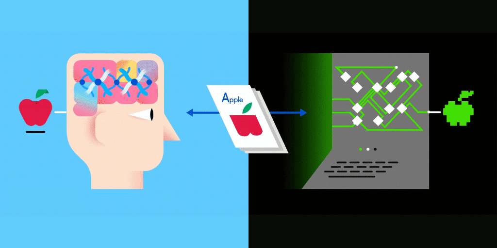
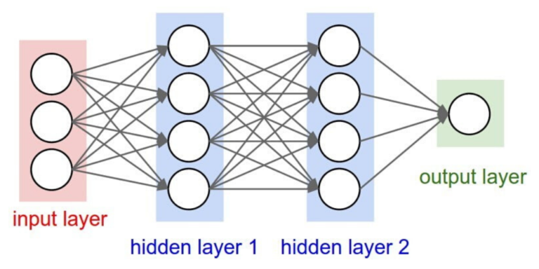
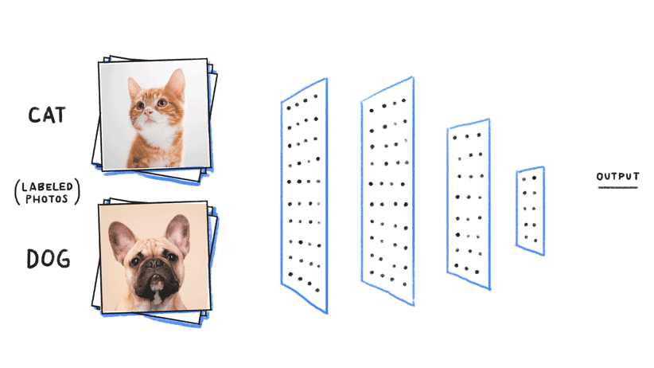
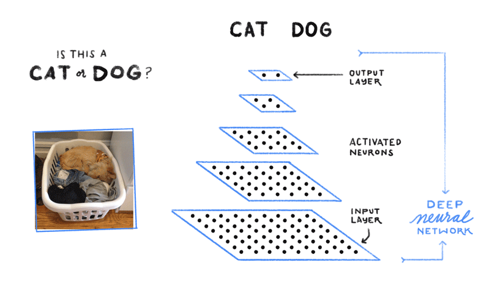

What are Artificial Neural Networks (ANN)?
Artificial Neural Networks or ANN is an information processing paradigm that is inspired by the way the biological nervous system such as brain process information. It is composed of large number of highly interconnected processing elements (neurons) working in unison to solve a specific problem. Think of it as a nervous system. Except, instead of yours, it's a computer program's.

Neural networks are a set of algorithms, whose model is inspired by the human brain. Neural networks are designed to recognise and distinguish between patterns. They interpret sensory data through a kind of machine perception, labelling or clustering raw input. The patterns they recognise are numerical, contained in vectors, into which data such as images, sound, or text must be translated.
That's all cool, but how do ANNs work?
A typical Neural Network contains a large number of artificial neurons called units arranged in a series of layers. The input layer is where rules are predetermined and representative examples are given to show the ANN what the output should look like. Hidden layers are where the input is processed and “broken down”.

Neural networks are a set of algorithms, who model is inspired by the human brain. Neural networks are designed to recognise and distinguish between patterns. They interpret sensory data through a kind of machine perception, labelling or clustering raw input. The patterns they recognise are numerical, contained in vectors, into which data such as images, sound, or text must be translated.
The layers can be explained as follows:
- Input layer: It contains those units (Artificial Neurons) which receive input from the outside world on which network will learn, recognise about or otherwise process.
- Output layer: It contains units that respond to the information about how it learnt any task.
- Hidden layer: These units are in between input and output layers. The job of the hidden layer is to transform the input into something that output unit can use in some way.
Most Neural Networks are fully connected that means to say each hidden neuron is fully linked to every neuron in its previous layer (input) and to the next layer (output) layer.
We're going to start with an interesting model that classifies an input image if it's a CAT or a DOG. Interesting right? Right-O!
Step 1: Preparation of the Dataset
First off, to classify data, we need data right? We could go ahead and download pictures of dogs and cats off Google. But to be able to classify based on data, we would need a significant amount of images. We possibly couldn't sit and download images for a whole day because that's absolutely not efficient. Hence, Kaggle to the rescue. use the below link to download the dataset right from Microsoft's website.
Download the dataset here.
Here's the code for that part.
import numpy as np
import matplotlib.pyplot as plt
import cv2
import os
DataDir = r"C:\Users\USERNAME\FOLDERNAME"
CATEGORIES=["Dog","Cat"]
for i in CATEGORIES:
path=os.path.join(DataDir,i)
for img in os.listdir(path):
img_array=cv2.imread(os.path.join(path,img),cv2.IMREAD_GRAYSCALE)
plt.imshow(img_array,cmap='gray')
plt.show()
break
break
img_size=100
new_array=cv2.resize(img_array,(img_size,img_size))
plt.imshow(new_array,cmap='gray')
plt.show()
training_data=[]
def create_training_data():
for i in CATEGORIES:
path=os.path.join(DataDir,i)
class_num=CATEGORIES.index(i)
for img in os.listdir(path):
try:
img_array=cv2.imread(os.path.join(path,img),cv2.IMREAD_GRAYSCALE)
new_array=cv2.resize(img_array,(img_size,img_size))
training_data.append([new_array,class_num])
except Exception as e:
pass
create_training_data()
print(len(training_data))
Next up, we add the features and labels to them so as to identify them as cat images or dog images. And then, to use the data we just downloaded, we sort of package it into a box understandable by Python programs called "Pickle". We just pickle it.
Here's the code for that part.
import random
random.shuffle(training_data)
for sample in training_data[:10]:
print(sample)
x=[]
y=[]
for features,label in training_data:
x.append(features)
y.append(label)
print(x[0].reshape(-1,img_size,img_size,1))
x=np.array(x).reshape(-1,img_size,img_size,1)
import pickle
pickle_out=open(r"C:\Users\USER\FOLDERNAME\x.pickle",'wb')
pickle.dump(x,pickle_out)
pickle_out.close()
pickle_out=open(r"C:\Users\USER\FOLDERNAME\y.pickle",'wb')
pickle.dump(y,pickle_out)
pickle_out.close()
Now, that's the end of Step 1. On to the more interesting part of training the model, below.
Step 2: Training the data and Building the CNN Model
Now, we begin by importing the Pickle we exported into the program.
Here's the code for the import part.
import tensorflow as tf
from tensorflow.keras.models import Sequential
from tensorflow.keras.layers import Dense,Dropout,Activation,Flatten
import pickle
from tensorflow.keras.layers import Conv2D,MaxPooling2D
pickle_in=open(r"C:\Users\USER\FOLDERNAME\x.pickle","rb")
x=pickle.load(pickle_in)
pickle_in=open(r"C:\Users\USER\FOLDERNAME\y.pickle","rb")
y=pickle.load(pickle_in)
#print(x) #x shows features
#print(y) #y shows the labels #0 refers to Dog & 1 refers to cat because that's how we have indexed in cnn_creating_data file
x=x/255.0
print(x)
Let's now build the model.
We start with passing the data through 2 dimensional layers because we have two labes to classify between - Whether it's a cat? or a dog?. It's a very simple Binary classification problem. We would train the computer to look for patterns on the images to identify dogs and cats, respectively.

We then have the computer train itself by running through 10 Iterations each with a batch input of 8 images and so it would take a considerable time to complete running without a GPU.
Here's the code to build the model & train it.
model = Sequential()
model.add(Conv2D(256,(3,3),input_shape=x.shape[1:]))
model.add(Activation('relu'))
model.add(MaxPooling2D(pool_size=(2,2)))
model.add(Conv2D(256,(3,3)))
model.add(Activation('relu'))
model.add(MaxPooling2D(pool_size=(2,2)))
model.add(Flatten())
model.add(Dense(64))
model.add(Dense(1)) #The brain - The piece that memorizes
model.add(Activation('sigmoid')) #since two labels, so sigmoid | If 3 labels, softmax
model.compile(loss='binary_crossentropy',optimizer='adam',metrics=['accuracy'])
model.fit(x,y,batch_size=8,epochs=10,validation_split=0.3)
model.save(r"C:\Users\USER\dogs_vs_cats_updated_CNN.model")
How would we know if the model was successful? Through metrics called "Accuracy" and "Loss". After evaluation, we finally save the model in a ".model" format to our local disk.
Step 3: Using the model to predict images downloaded from the Internet.
We use a very popular computer vision Library called Open CV (Computer Vision) that reads the image, converts to grayscale, resizes it to a size that we have trained the model on & predict the input image.

Here is the code for the final portion
import cv2
import PIL
import tensorflow as tf
import matplotlib.pyplot as plt
import matplotlib.image as mpimg
from tensorflow.keras.models import load_model
CATEGORIES=['Dog','Cat']
image=r"C:\Users\USER\petimagestest\test.jpg"
def prepare(filepath):
img_size=100
img_array=cv2.imread(image,cv2.IMREAD_GRAYSCALE)
new_array=cv2.resize(img_array,(img_size,img_size))
return new_array.reshape(-1,img_size,img_size,1)
model=tf.keras.models.load_model(r"C:\Users\USER\dogs_vs_cats_updated_CNN.model")
prediction = model.predict([prepare(image)])
print(int(prediction[0][0]))
print(CATEGORIES[int(prediction[0][0])])
img=mpimg.imread(image)
imgplot=plt.imshow(img)
plt.title(CATEGORIES[int(prediction[0][0])])
plt.show()
AND, that's a WRAP!
Hope you had fun & learnt something. Browse around our lab for more.